Artemis IMU connections and running example code:
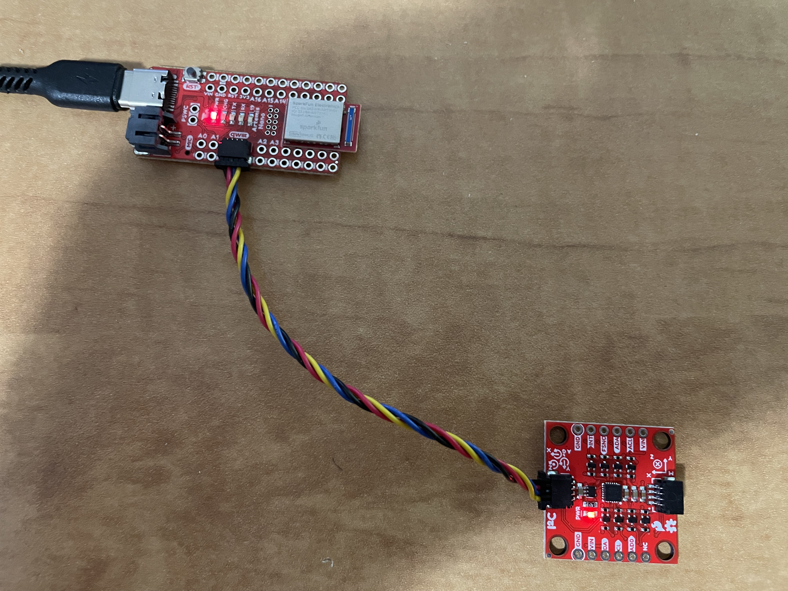AD0_VAL represents the logic level (0 or 1) of the AD0 pin on the ICM-20948 sensor. It is the LSB address of the I^2C bus. Below is a video of the startup light sequence.
Code for converting accelerometer data to angles in degrees:
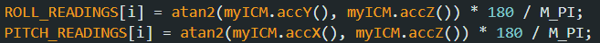The accelerometer data is pretty accurate, but there is a lot of noise. Using roll measurements from 90 degrees low and 90 degrees high, we can see that using two point calibration, the calibrated response is on average the same as the reference high and low of 90 degrees and -90 degrees respectively.
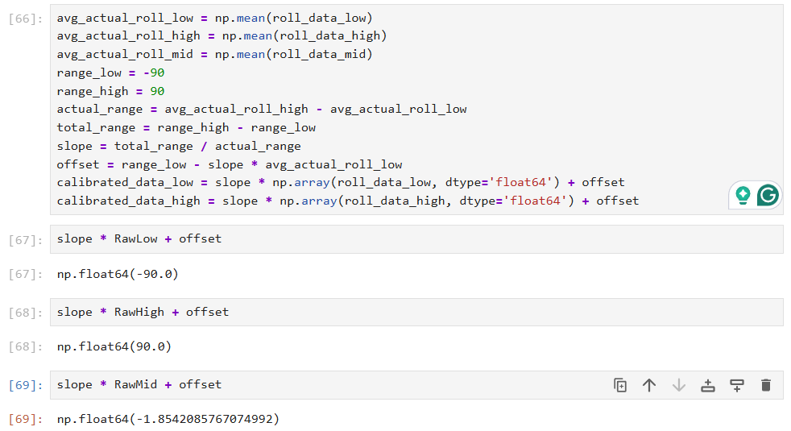 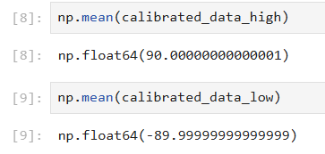Below is accelerometer data of the IMU sitting flat on my table with no movement. There is a lot of noise.
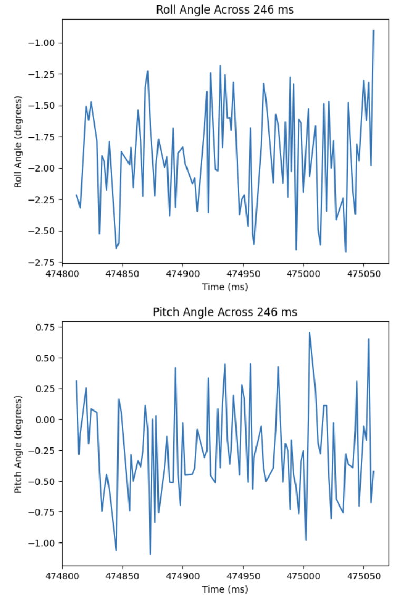Below is the fourier transform graphs for both the roll and pitch data. Both the roll and pitch graphs have a very large spike at 0 Hz, which means the board was sitting at a steady tilt during the measurement. The rest of the graph shows small values spread across many frequencies, which indicates normal sensor noise and no strong repeated shaking at a specific frequency.
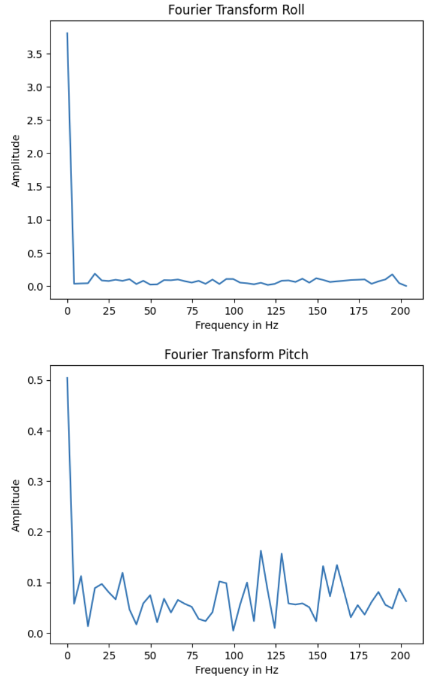From the fourier transforms, we can see that there are no strong peaks at higher frequencies. Because at higher frequencies, noise is mostly small and spread out, the "real" motion is in the low hz range, and higher frequencies are just noise. Using these formulas from lecture:
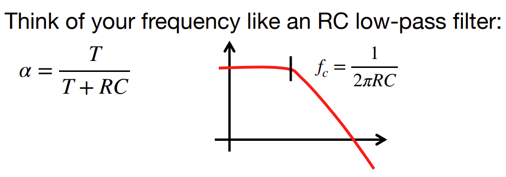 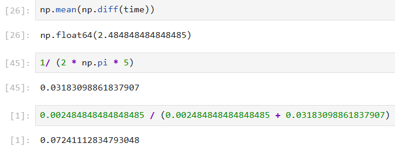I calculated an alpha of 0.0724 for my lowpass filter with a cutoff frequency of 5hz.
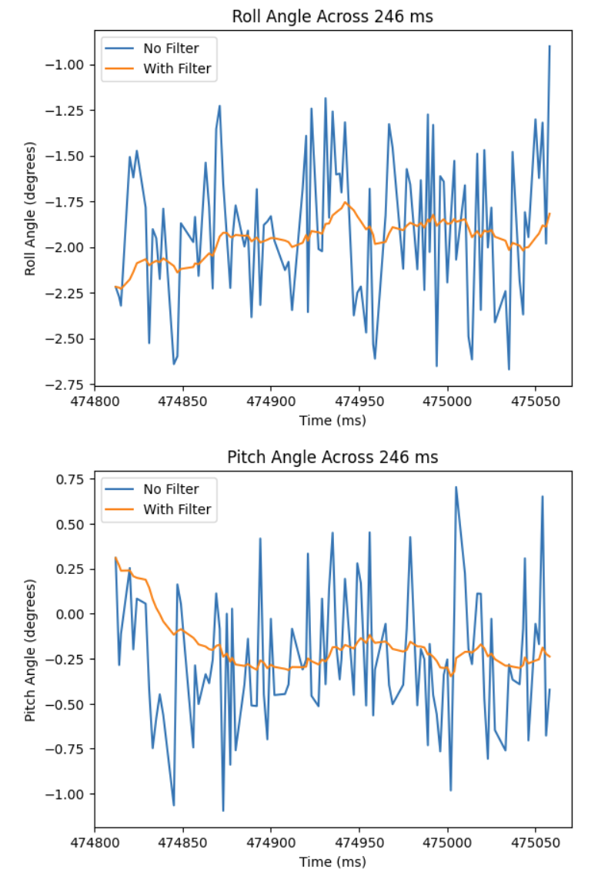In the graphs above, most of the noise is taken out and the data remains much more steady over time with much less noise.
Below are graphs comparing the output of the gyroscope to the pitch, roll, and yaw values from the accelerometer and the filtered response (low pass filter with alpha of 0.0724 like above). They differ in how little noise gyroscopes have compared to accelerometers. I also noticed that when I left the IMU sitting in a stationary position, the gyroscope would quickly drift. This caused me to have to start the gyroscope calculations at {0, 0, 0} to get more accurate readings.
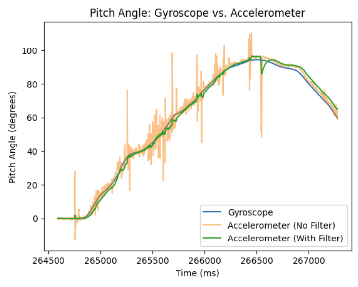 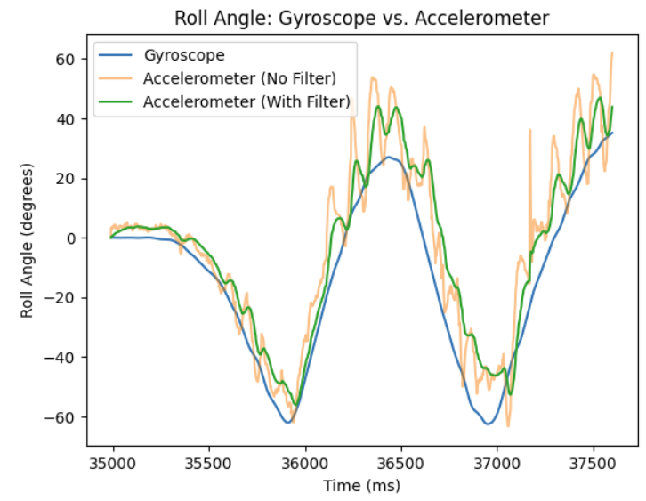 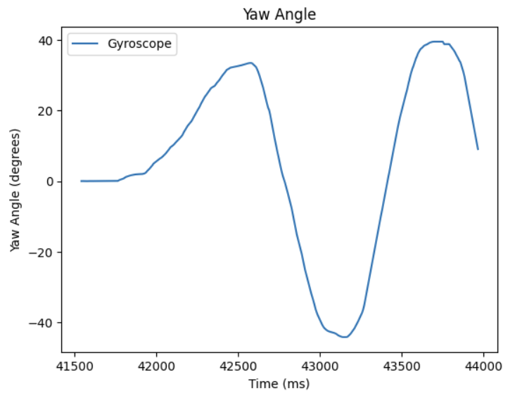 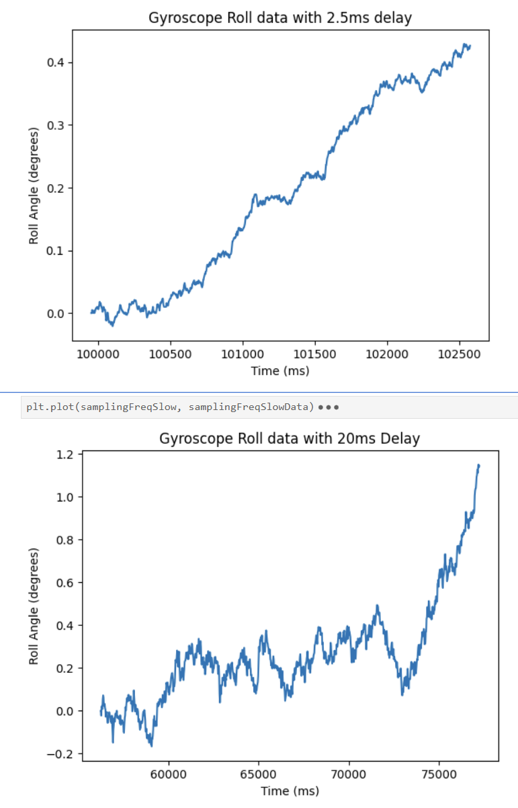Both of these graphs were collected with 1000 samples. The accumulated error seemed to both grow over time, but more so for a larger delay.
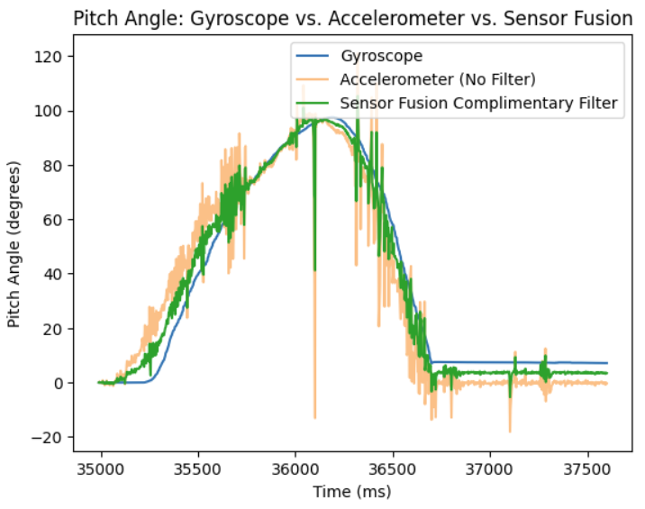Adjusting for multiple different alphas, I couldn't quite perfectly balance the gyroscope and accelerometer to remove the noise while also maintaining the accuracy of the accelerometer. I was holding it up and quickly jolted it to pitch it up and down and it responded with less noise than just the accelerometer data. The drift did not accumulate as bad as returning it to 0 degrees on my flat table, got it back to 0 very closely.
For all of the data collected, I didn't wait for IMU data to be ready to move through the loop. I also didn't use any delays or serial.print statements. In the picture above, it was of 100 samples and took 246 ms which is 2.46 ms a sample. I had an if else statement that checked whether IMU data was ready and if it was stored it, but if it wasn't, it printed something in the serial monitor to tell me. After all the data I collected above, I never once had it print out. This tells me that my main loop never ran faster than the IMU produced new values.
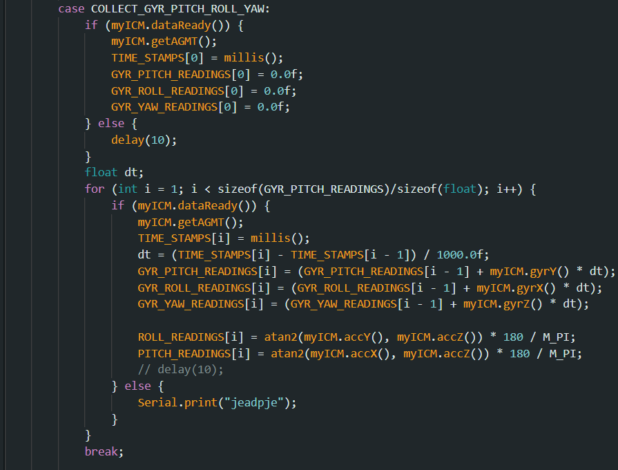This is the code block I used to collect the gyroscope and accelerometer data simultaneously. I stored the time each sample was collected and all of them were put in arrays. I stored the data for pitch, roll, and yaw for gyroscope and accelerometer in completely different arrays. I did this so I can easily copy and paste the string outputs into a list.
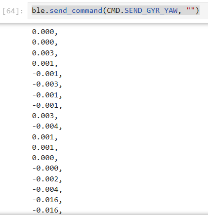 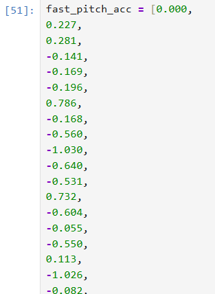I used strings to send my data as but stored them as floats in the arrays on the board. This allowed me to do math on the board with the floats, and sending them as strings was just because I was just manually copying and pasting the data to create lists in Python to be plotted out as seen above.
The Artemis Nano has 384kb of RAM. This means I could technically use hundreds of kilobytes of ram for arrays. Since floats are 4 bytes, I could at most allocate close to 90000 floats. This would be a stretch though, since I would barely have any space for any other parts of my program to use the RAM.
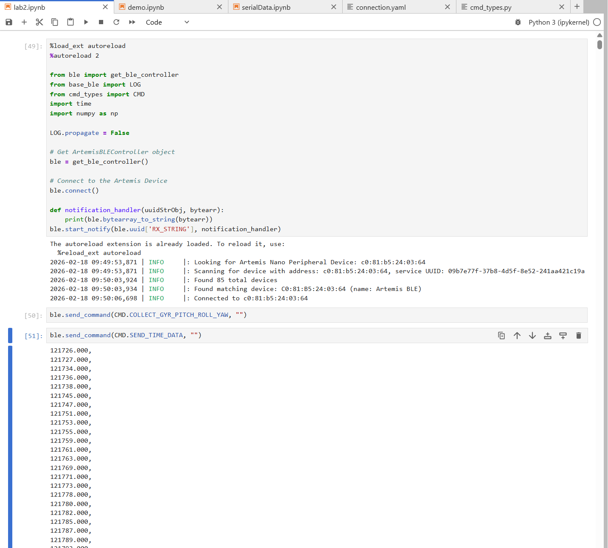 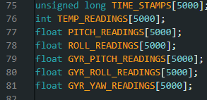I stored 5000 samples for each of the data points, and it took 135179 - 121726 = 13453 milliseconds = 13.453 seocnds to collect all the samples. As you can see I am in Jupyter Notebook where I received the time data and IMU data over bluetooth.